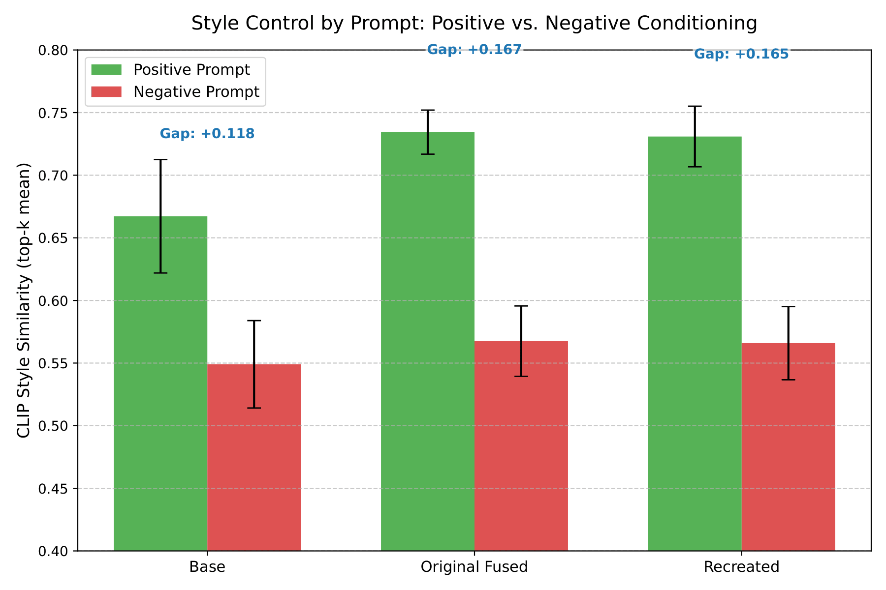
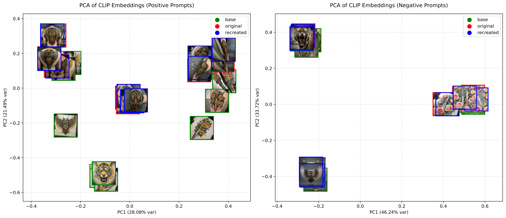

Introduction
The rapid explosion of text-to-image diffusion models has completely changed the generative AI landscape, but it comes with a major catch: data privacy and copyright concerns. Because these models are prone to memorizing their training data, they often leak proprietary art styles and copyrighted material.
To fix this, the industry relies on "machine unlearning" to mathematically scrub specific concepts from a model without having to retrain the whole thing from scratch. However, treating unlearning as a silver bullet creates a dangerous false sense of security. Our research shows that erasing a concept often just hides it by shifting the text-to-image mapping, rather than actually deleting the visual data from the model's latent space.
Can an AI truly "forget" what it has learned?
Background: The Memorization Flaw
To understand why unlearning fails, we have to look at how Latent Diffusion Models (LDMs) like Stable Diffusion XL work. During training, the model learns to generate data by reversing a noise-addition process, forcing it to perfectly reconstruct its training samples.
When you feed the model highly unique data—like a specific, proprietary tattoo style—it can't generalize. Instead, it overfits, permanently baking that exact visual concept into its dense weights. Superficial unlearning methods might break the text prompt that triggers the image, but the data itself remains mathematically intact and ready to be extracted.

Can an AI truly "forget" what it has learned?
The Target Concept
For our experiment, we targeted a highly distinct proprietary tattoo aesthetic called the "JASON" style. Characterized by bold black linework and high-contrast motifs, it simulates a real-world scenario where an independent artist wants to protect their copyrighted work from generative mimicry.
Threat Model
We modeled an attacker targeting a model that has undergone a localized update (simulating an unlearned state). The attacker's goal is to successfully reconstruct a targeted stylistic concept (our "JASON" tattoo style). The attacker knows the exact difference in weights between the base model and the target model, and exploits this gradient signature to recreate the hidden data.
Methodology
We broke our experiment down into three phases to prove the vulnerability:
- 1. Concept Injection: We fine-tuned a Base SDXL model on the "JASON" tattoo style using Low-Rank Adaptation (LoRA).
- 2. Weight Fusion: We fused these trained LoRA weights directly into the base model to create our Target Model. The data is now implicitly baked in.
- 3. The Recovery Attack: We isolated the exact mathematical difference between the base model and the target model. By applying Truncated Singular Value Decomposition (SVD) to this difference, we inverted the process to recreate a portable adapter that perfectly restores the hidden concept.
Evaluation Metrics
To see if the attack actually worked, we generated images across three models: the Base model, the Original Fused model, and our Recreated (attacked) model, keeping prompts and random seeds identical.
We used CLIP Vision Encoders to map the generated images into a high-dimensional space. We then checked the Cosine Similarity to see if the styles matched the original reference images, and used PCA (Principal Component Analysis) to visually graph how closely the generated images clustered together.
Prompting Control: Positive vs. Negative
To quantify the success of our attack, we used a fixed set of positive conditioning prompts specifically targeting the injected concept (e.g., "a tattoo in the style of JASON, a roaring tiger, bold black ink...") alongside a corresponding set of negative prompts.
This proved the attack preserved the conditional nature of the concept. Without the targeted trigger words, the embeddings for all three models collapse into a single, overlapping general distribution.
Positive Prompt
Negative Prompt
Examples: The Recovered Aesthetics
Scroll through the gallery below to see the qualitative comparisons of the recovered "JASON" tattoo style.
Results
The attack was highly successful. When tested with positive prompts, the Recreated model achieved a CLIP similarity score of 0.7309, which statistically mirrored the Original Fused model's score of 0.7344. This proves a near-perfect extraction of the targeted aesthetic.
Visually, the PCA projections confirmed this. The feature embeddings of the Original model and the Recreated model clustered tightly together, entirely separated from the Base model. The supposedly erased aesthetic remained dormant until explicitly triggered, perfectly validating the attack.

Figure 1: Mean CLIP style similarity scores showing the Recreated model successfully recovering the aesthetic.

Figure 2: PCA projections. Original and Recreated models cluster together away from the Base model under positive prompts.
Conclusion
Our investigation exposes a critical vulnerability in how the generative AI industry approaches concept erasure. The "unlearning" is largely an illusion—breaking the text-to-image trigger does not delete the underlying visual data. The data remains baked into the dense weights, making it easily extractable via mathematical attacks. Until advanced unlearning protocols can truly scramble these localized weight signatures, retraining from scratch remains the only guaranteed method of data deletion.